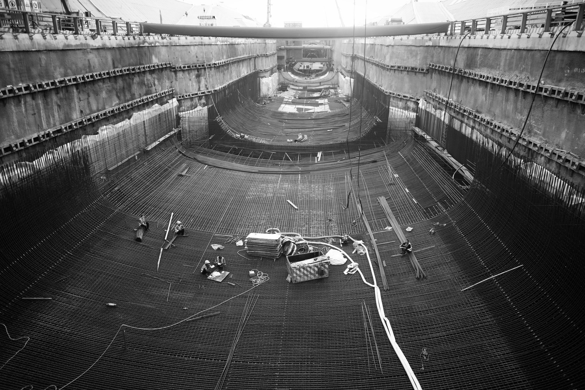
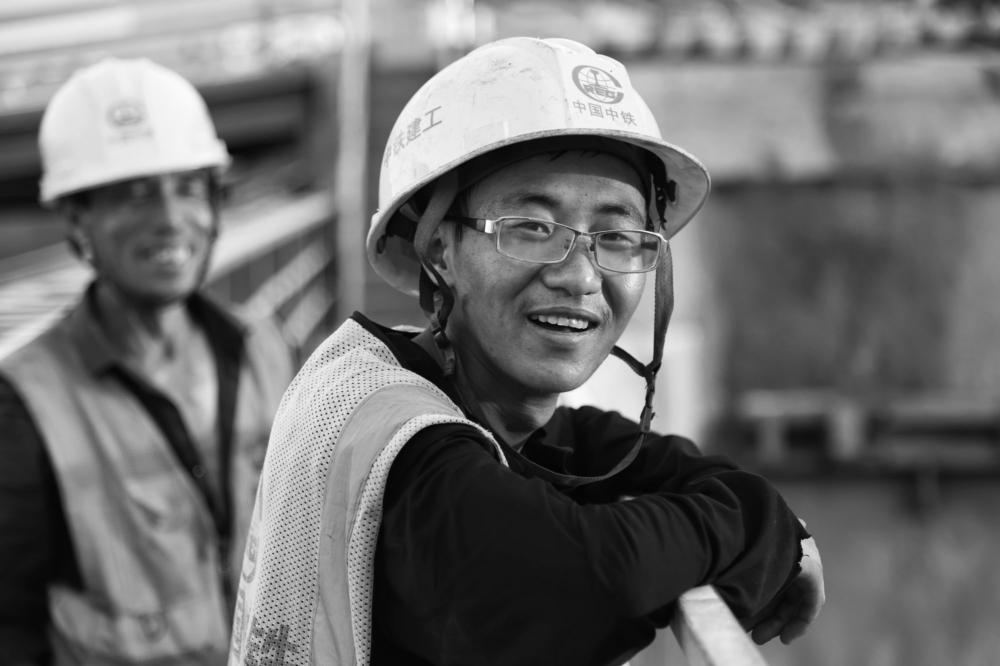
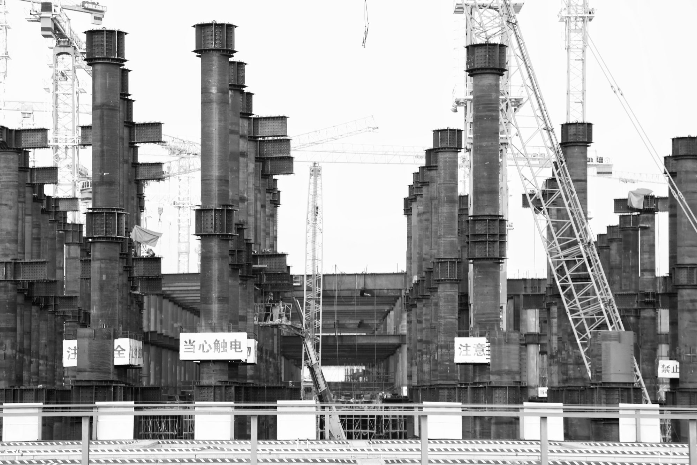
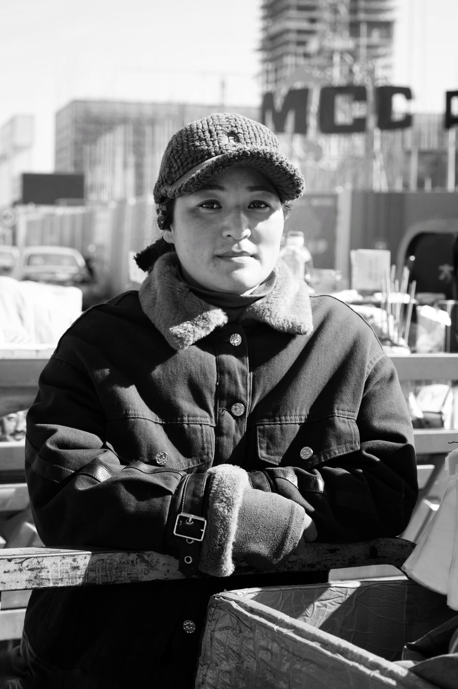
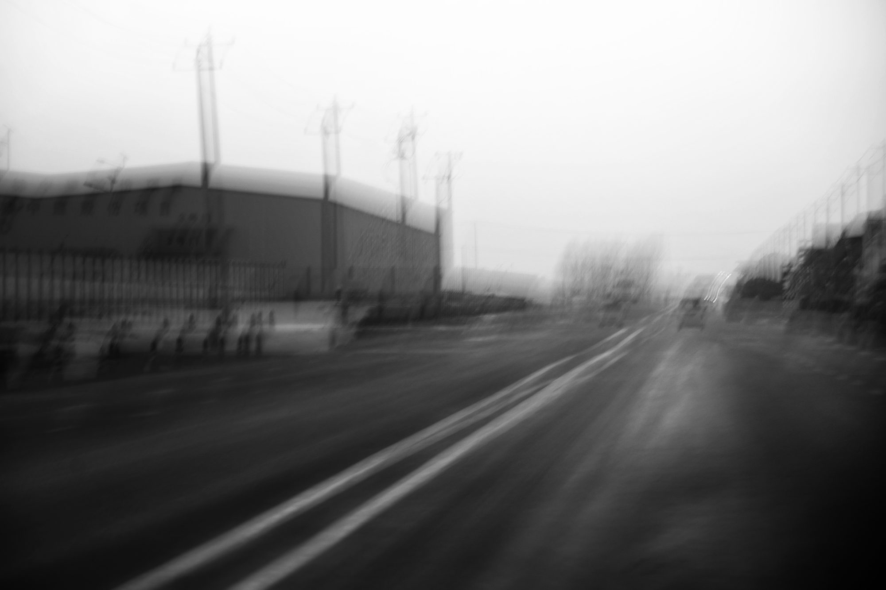
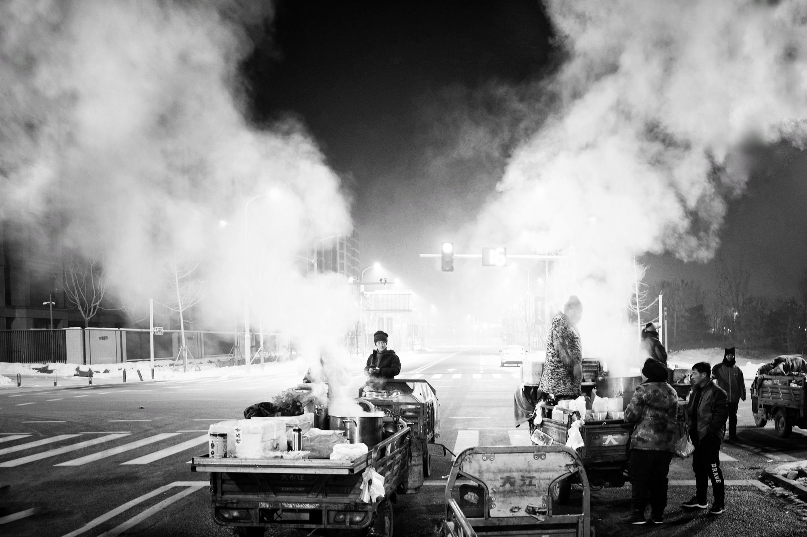
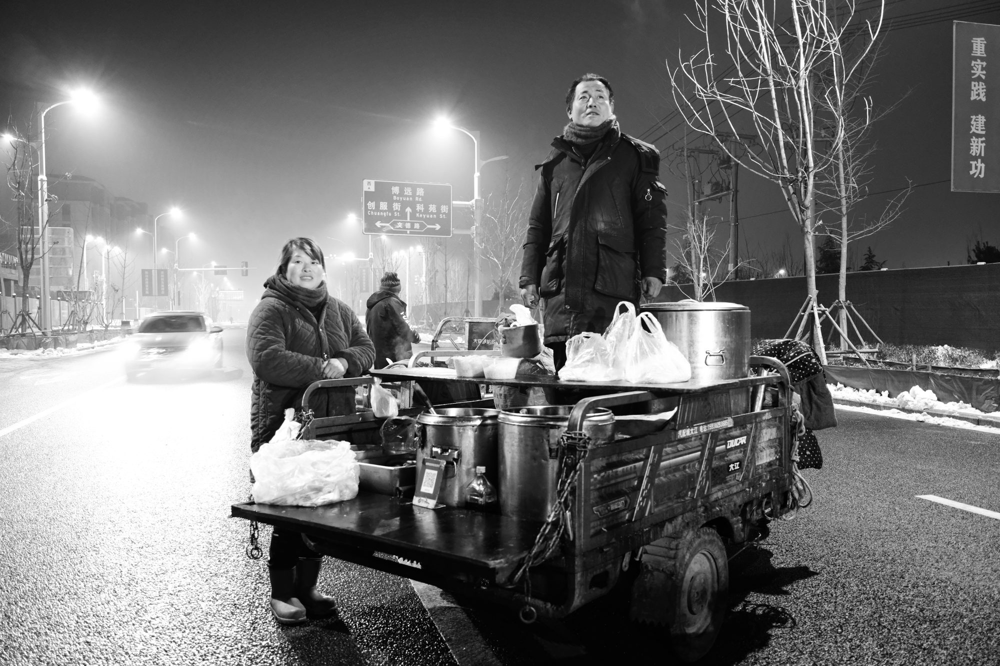
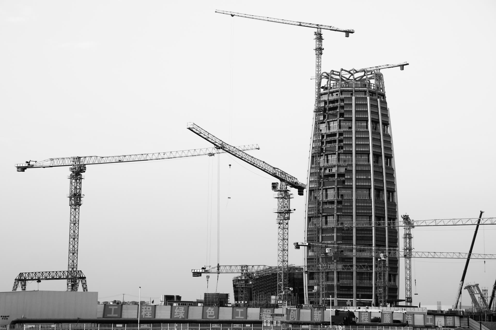
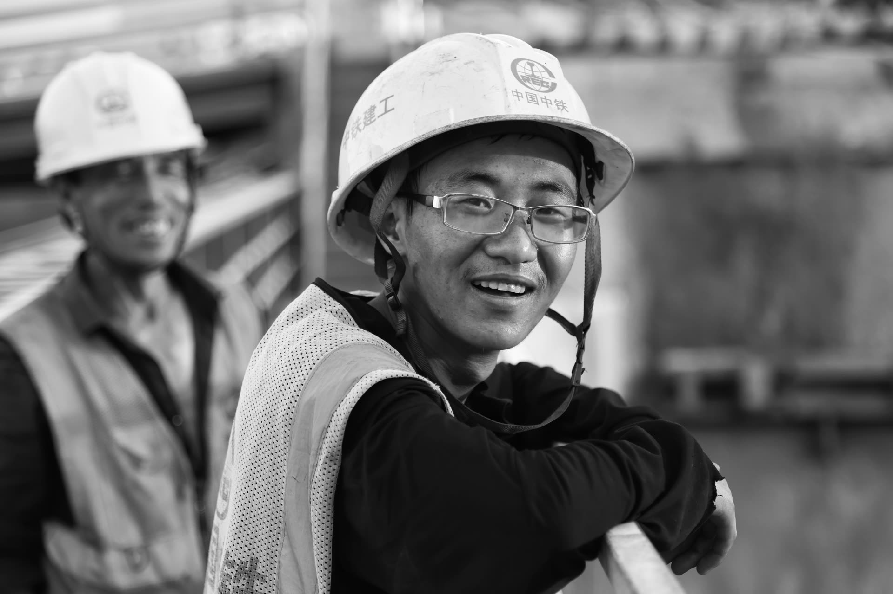
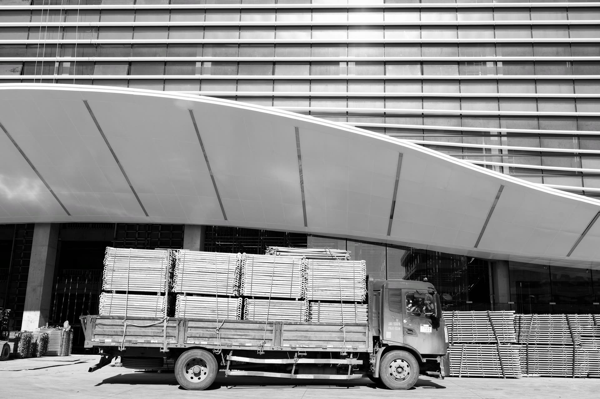

Unit 01 · Xiong'an Builders
雄安建设者
温度 · 骨架 · 候鸟

真正的未来，永远需要人的温度去浇筑。这些基层建设群体，包括塔吊司机、混凝土工等一线劳动者， 以体力劳动浇筑城市骨架；临时宿舍与工地食堂构成其「候鸟式」生存空间，居住条件与疏解人才形成鲜明对比—— 后者享受各种补贴入住高级配置的公寓社区，前者栖身于装配式工棚，用铁皮桶改造取暖设施。 他们在这里留下过自己的生命印记，为这座城市打下过地基。









